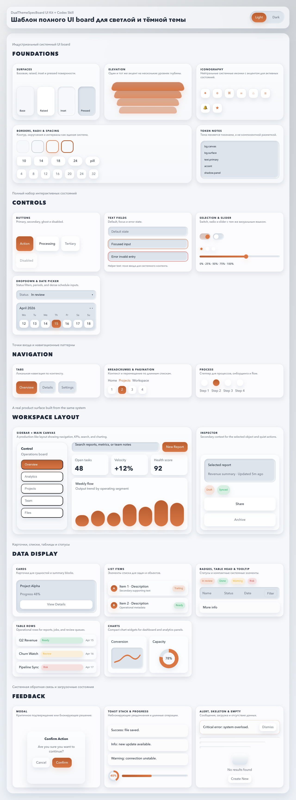
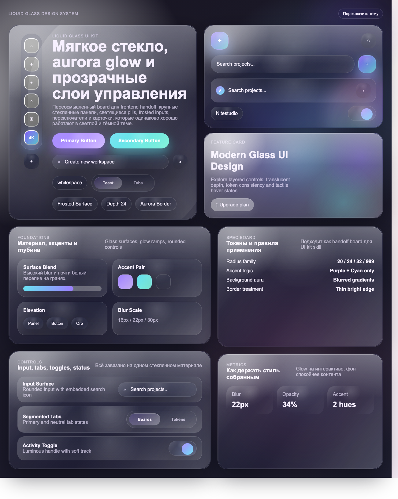
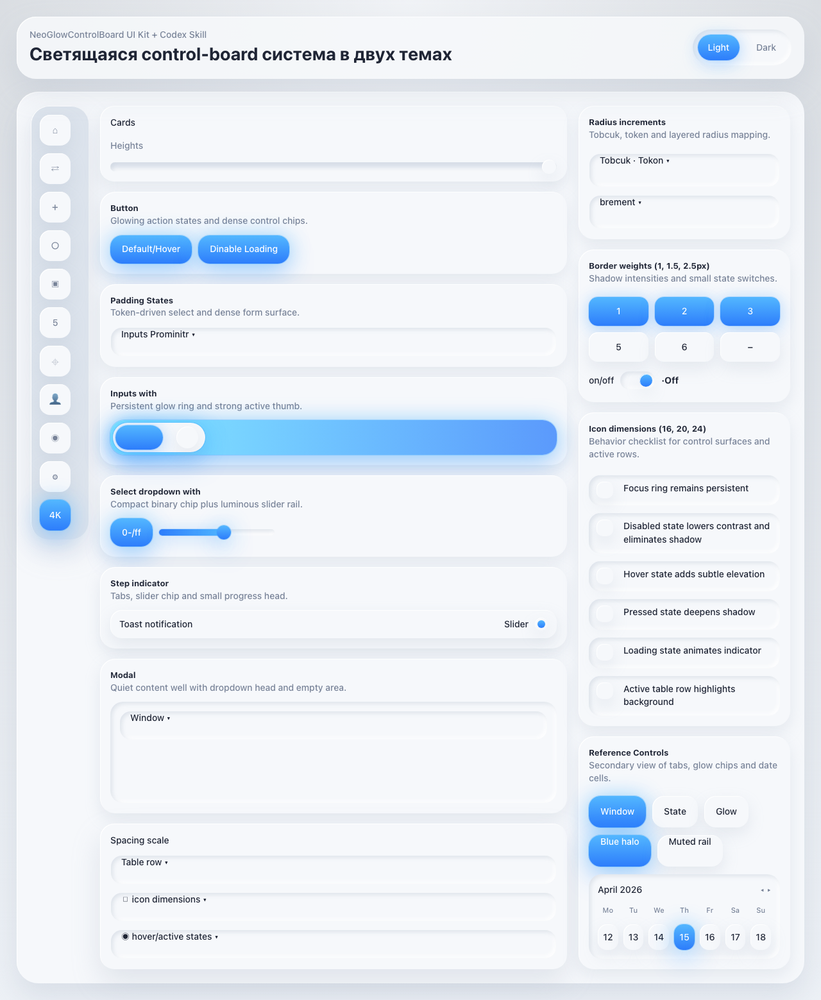
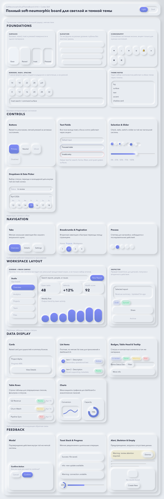

Structured product UI
Dual Theme Spec Board
SaaS dashboards, admin tools, workspaces, settings screens, and state-heavy UI systems.
Installable Codex skills for product UI systems
Four reusable UI board skills with dual-theme design tokens, Tailwind presets, screenshots, and standalone HTML previews for Codex-driven frontend work.

Structured product UI
SaaS dashboards, admin tools, workspaces, settings screens, and state-heavy UI systems.

Premium glass surfaces
AI tools, premium dashboards, launchers, glossy settings surfaces, and visual concept boards.

Dense control surfaces
Technical admin panels, QA screens, control rooms, and compact operational interfaces.

Calm tactile workspaces
Productivity apps, internal tools, dashboards, settings panels, and quiet UI kits.
Maintainer workflow
npm run validate